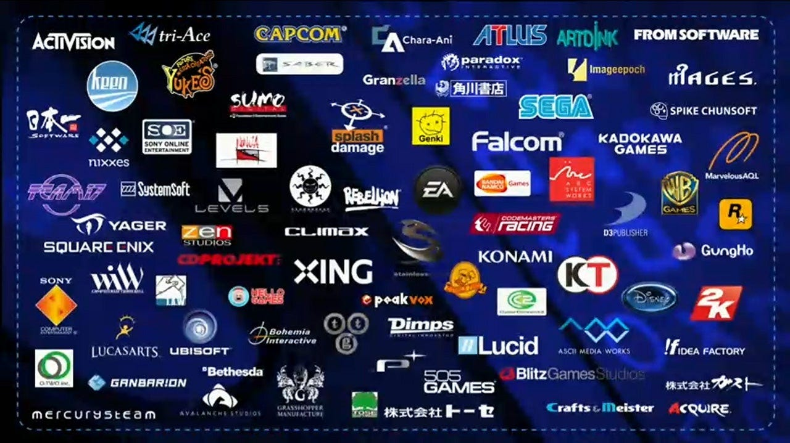

Releasing revenues for Game studios


A gaming device connected gives an opportunity for the game‘s content to be dynamic rather than how it is when it is shipped with a cartridge or a piece of CD, A fixed environment wherein the player evolves and performs actions. Games Designers and Game studios Have not still exploited entirely this new opportunity for freeing new ways of generating in-game’s revenues.
Designing and developing games is about Art and technology but revenues help make these two parts work in sync and produce better ideas and solutions. Hopefully, the gaming industry is a growing industry, spending time valuing game studio companies with this new attention valuation model reminded me how big the gaming market is and all these solutions for making more revenues with games and connecting people and organizations with it, and helping them achieve their respective goals while learning.
Here are some pieces of data about Zynga,
just to show you that I am doing the work for publishing valuation articles in SeekingAlpha using this new methodology of tech company valuation that I think is more relevant and precise but this article is more about Gaming than it is about Company valuation.
Reducing our scope is very important that’s why as I have to do company valuation’s articles while writing this book about Gamestop and managing to run a game tech startup and a publishing startup, I said to myself that it was better to start valuing companies of the gaming industry to hit more with one shoot.
If you do read me regularly, I do hope that you see that all of this coherent and on focus.
About the missing opportunities for revenues that games studios could get, here are some of the genres of games that could benefit from this new in-game technology that Godda Games is building for them to have more revenues.
Almost all open-world games can benefit from this revenues generating solution that Godda Game is building and shipping to the gaming industry.
a Game is a Medium and there is this business model that every medium is exploiting at scale, why not Games?